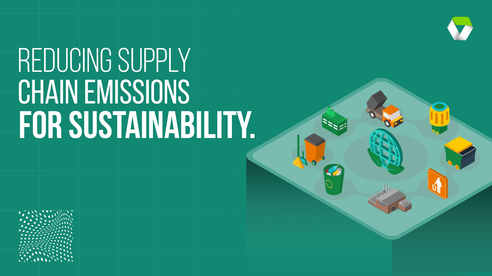

Cooperative Climate Action in Business & Industry
Businesses influence energy use, transport and materials. Their climate action becomes stronger when companies cooperate instead of trying to solve every problem alone.
Businesses influence energy use, transport and materials. Their climate action becomes stronger when companies cooperate instead of trying to solve every problem alone.
Partnerships allow organisations to combine ideas, skills and resources. A corporate sustainability partnership is created when businesses work with other organisations on a shared environmental goal. The partners may include suppliers, local authorities, universities, charities or community groups. Each partner brings different knowledge and resources to the project.
For example, one company may provide funding, a university may test a new idea and a community group may explain local needs. Working together can make an environmental project more practical because decisions are not made from only one point of view.
A supply chain connects materials, factories, transport and customers. A product can pass through many countries before it reaches a customer. Raw materials are collected, parts are manufactured, goods are packed and several forms of transport may be used. Energy is required at every stage, so companies need to look beyond their own offices and factories when planning climate action.
Multinational companies often use the same suppliers and transport services. If these companies agree on simple environmental requirements, suppliers receive a clearer message. They can spend more time improving energy use and less time answering different requests from every customer.

Clean manufacturing combines useful production with careful use of resources. An industry coalition is a group of companies from the same or related industries. Members cooperate on problems that are difficult for one business to solve alone. For clean manufacturing, this may include energy efficiency, safer materials, waste reduction, water use and the reuse of production materials.
A coalition can compare methods used by different factories and identify ideas that work well. Members can also test cleaner technology together. Sharing the cost and learning from the same trial can make improvement more achievable for smaller manufacturers.